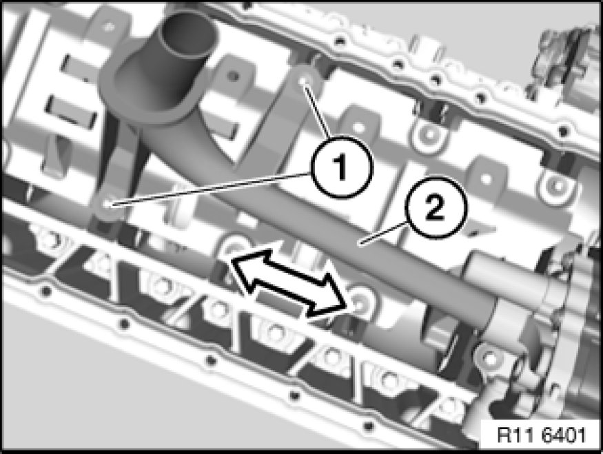
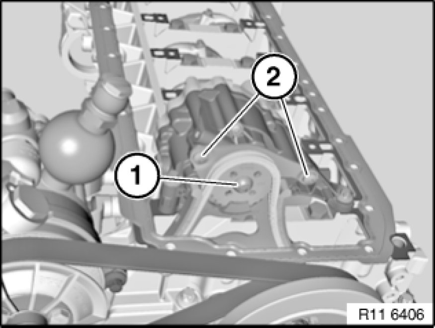
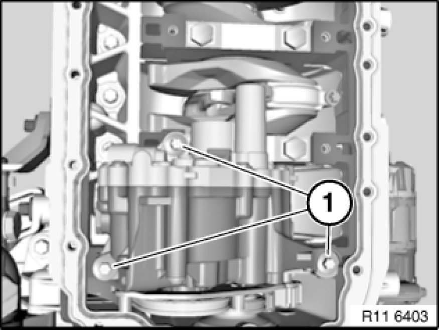
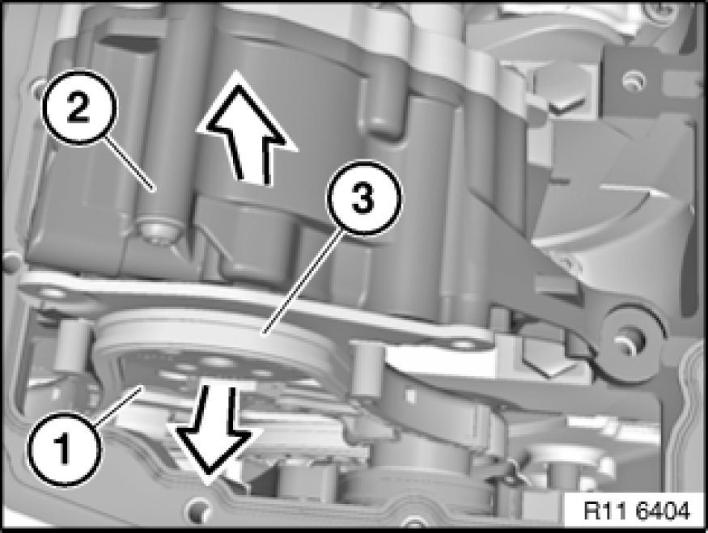
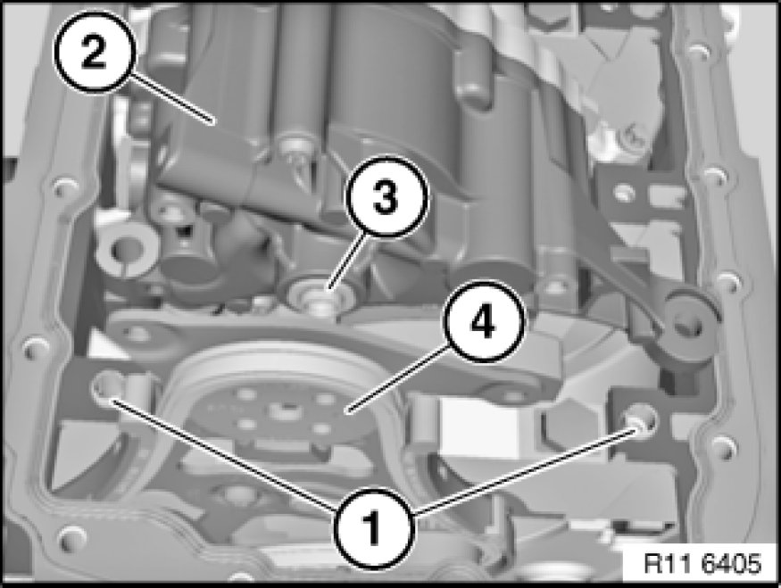

11 41 000 Removing and Installing/Replacing Oil Pump
11 41 000 - Removing and installing/replacing oil pump (N52K)

Necessary preliminary tasks:
- Remove oil sump Service and Repair

Release screws (1).
Tightening torque 11 41 1AZ. Mechanical Specifications
Installation:
Replace aluminium screws.
Remove intake pipe (2) in direction of arrow.
Installation:
Replace sealing ring.

Note:
To release bolt (1), insert a 6 mm drill bit between sprocket wheel and oil pump housing.
Release bolt (1).
Tightening torque 11 41 6AZ. Mechanical Specifications
Release screws (2).
Tightening torque 11 41 5AZ. Mechanical Specifications
Installation:
Replace aluminium screws.

Important!
Observe different screw lengths.
Release screws (1).
Tightening torque 11 41 2AZ. Mechanical Specifications
Tightening torque 11 41 3AZ. Mechanical Specifications
Installation:
Replace aluminium screws.

Detach sprocket wheel (1) in direction of arrow.
Note:
Chain tensioner presses timing chain (3) upwards.
Do not remove sprocket wheel (1).
Remove oil pump (2) in direction of arrow.

Installation:
Check spacers (1) for secure seating and damage; replace if necessary.
Align twin surface (3) on oil pump (2) to sprocket wheel (4).
Install oil pump (2).

Assemble engine.